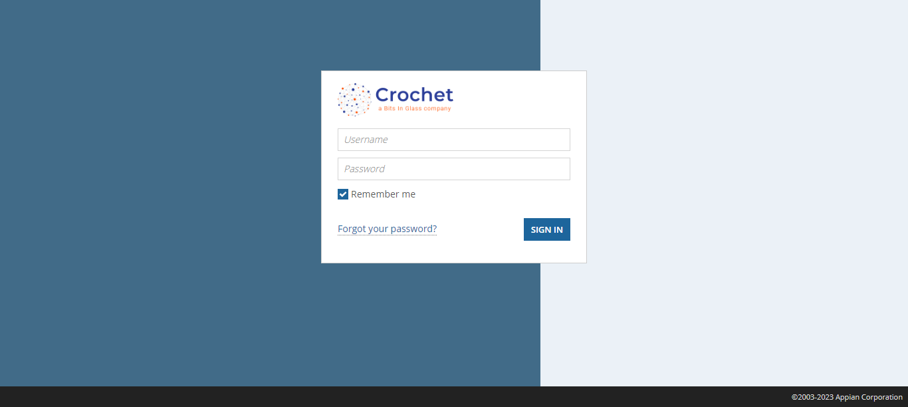

Started
Apr 14, 2023 07:52:38 PM
Ended
Apr 14, 2023 07:54:32 PM
Features Passed
1
Features Failed
1
Features
Scenarios
Steps
Timeline
Tags
| Name | Passed | Failed | Skipped | Others | Passed % |
|---|---|---|---|---|---|
| @Sanity | 0 | 3 | 0 | 0 | 0% |
| 1 | 4 | 0 | 0 | 20% | |
| @Regression | 0 | 1 | 0 | 0 | 0% |
| @datatable | 1 | 0 | 0 | 0 | 100% |
System/Environment
| Name | Value |
|---|---|
| Application URL | https://crochettech.appiancloud.com/suite/sites/health-care-solution |
| Environment | QA |
| Browser | Chrome |
| OS | Windows 10 |
| User Name | DELL |
-
Data Table Example feature
7:52:40 PM / 00:00:09:349 Pass
Data Table Example feature
04.14.2023 7:52:40 PM 04.14.2023 7:52:50 PM 00:00:09:349 · #test-id=1PassData Table example scenarioGiven I am on Google home PageWhen I Search For multiple keywordskeywords Testing Cucumber TestNG Then I Should see relavant search content -
Verify the google Search Functionality
7:52:50 PM / 00:01:42:221 Fail
Verify the google Search Functionality
04.14.2023 7:52:50 PM 04.14.2023 7:54:32 PM 00:01:42:221 · #test-id=8FailSearch for testing trends in googleGiven I am on google pageWhen I search for Testing TrendsStep skippedThen I Should see relavant resultsStep skippedcom.big.stepdef.Initiation.teardown(io.cucumber.java.Scenario)ScreenshotFailSearch different topics in googleFailSearch different topics in googleGiven I am on google pageWhen I search for AutomationStep skippedThen I Should see relavant resultsStep skippedcom.big.stepdef.Initiation.teardown(io.cucumber.java.Scenario)FailSearch different topics in googleGiven I am on google pageWhen I search for cucumberStep skippedThen I Should see relavant resultsStep skippedcom.big.stepdef.Initiation.teardown(io.cucumber.java.Scenario)
-
org.openqa.selenium.WebDriverException
1 tests
org.openqa.selenium.WebDriverException
1 failedStatus Timestamp TestName Fail 19:53:47 PM Given I am on google page Verify the google Search Functionality.Search different topics in google.Given I am on google page -
org.openqa.selenium.NoSuchElementException
1 tests
org.openqa.selenium.NoSuchElementException
1 failedStatus Timestamp TestName Fail 19:52:52 PM Given I am on google page Verify the google Search Functionality.Search for testing trends in google.Given I am on google page -
java.lang.NullPointerException
2 tests
java.lang.NullPointerException
2 failedStatus Timestamp TestName Fail 19:54:25 PM com.big.stepdef.Initiation.teardown(io.cucumber.java.Scenario) Verify the google Search Functionality.Search different topics in google.com.big.stepdef.Initiation.teardown(io.cucumber.java.Scenario)Fail 19:54:32 PM com.big.stepdef.Initiation.teardown(io.cucumber.java.Scenario) Verify the google Search Functionality.Search different topics in google.com.big.stepdef.Initiation.teardown(io.cucumber.java.Scenario) -
org.openqa.selenium.NoSuchWindowException
1 tests
org.openqa.selenium.NoSuchWindowException
1 failedStatus Timestamp TestName Fail 19:54:27 PM Given I am on google page Verify the google Search Functionality.Search different topics in google.Given I am on google page